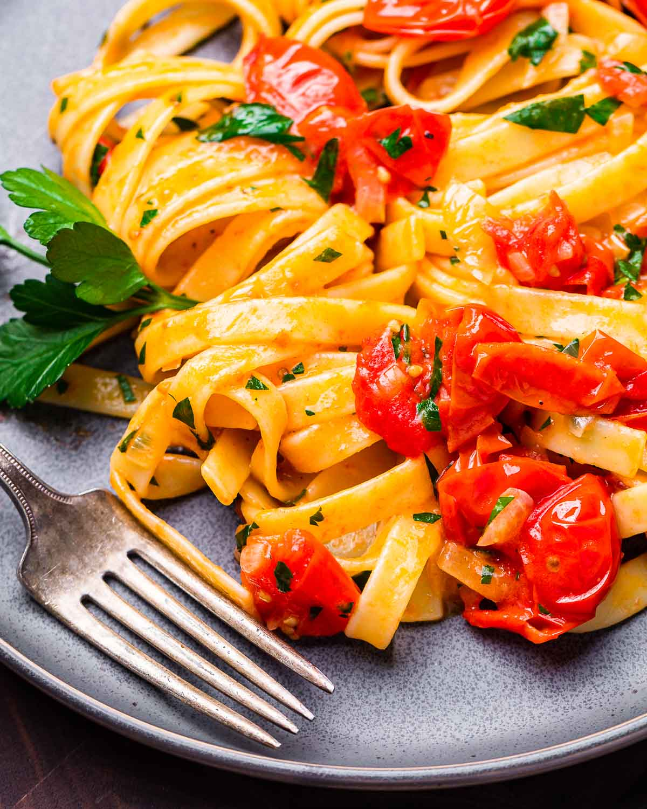

cherry butter tomato pasta

about these noods
there is nothing more simple than fettucini with cherry tomato butter sauce. bright cherry tomatoes are sauteed in butter with chopped onion, tossed with al dente fettucini, and finished with fresh parsley and basil. perfect for weeknights or when you're short on time but don't want to compromise on flavor.
what you need to craft these noods
- olive oil (extra virgin, always)
- onion
- fettucini
- cherry tomatoes
- unsalted butter
- salt & pepper
- parsley
- basil
stairway to deliciousness
- in a large pan, saute the onion in butter over medium-low heat until soft (about 5 minutes) then add the tomatoes. season the tomatoes initially with a teaspoon of kosher salt.
- cook the sauce over medium heat for 30-35 minutes (stir frequently and lower heat if scorching) or until the cherry tomatoes have burst and softened and the butter has completely blended in with the tomatoes.
- meanwhile, bring a large pot of salted (2 tablespoons kosher salt per gallon of water) water to boil. when the sauce is almost to your liking begin boiling the fettucini to 1 minute less than al dente.
- a few minutes before the pasta finishes cooking add 1 cup of pasta water to the sauce and stir to combine. continue to cook the sauce over medium heat.
- add the pasta to the sauce and toss to coat. cook until the pasta is just al dente then turn off the heat and season to taste with more salt and pepper as required. add the herbs, toss once more, then plate. if the sauce is at all dry, add more of the reserved pasta water a few ounces at a time to loosen it up. serve with grated parmesan reggiano cheese. enjoy!